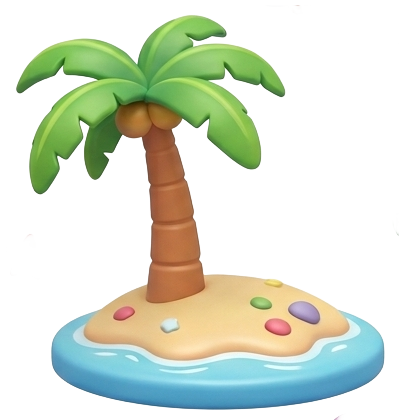
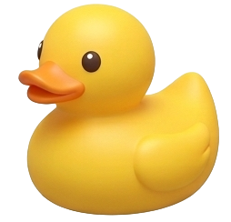
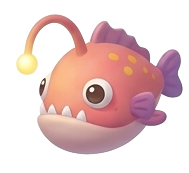

ちょっと一緒に
釣りしませんか😆？


はじめまして
SAYAKAです
デザイナー
商工会連合会 専門家派遣 講師
Illustrator / Photoshop / Premiere Pro / InDesign
AI × デザイン、新しい風を
つくれるもの。
- ロゴ
- 名刺・ショップカード
- チラシ・フライヤー
- ポスター
- パッケージ
- 販促物・POP
- グッズ
- キャラクターデザイン
- パンフレット
- SNSバナー
- Web・LP（AIで制作）
ここに書かれていないものでも作成可能です。
お気軽にご相談ください。
※掲載できるもののみ掲載しております。

-
Step 01
日本デザイン専門学校
プロダクトデザイン専攻 卒業。
-
Step 02
グラフィックデザイン
事務所立体から、平面へ。
アシスタントからプロへ。 -
Step 03
日本デザイン専門学校
ものデザイン学科 担任ものづくり×グラフィックを教える。
クラスの子達が卒業と共に退職。 -
Step 04
フリーランスとして独立
企業・ブランド・YouTuberまで、
幅広くデザインを。 -
Step 05
千葉県商工会連合会
専門家派遣デザイン講師に就任。
2026年現在も継続中。 -
[ Daily use. ]
あなたの心に、
誰かの心に。そっと寄り添って、
世界をすこし動かしていく。
これまで、
ご一緒させていただいたみなさま。
企業・ブランド
- パナソニックグループ
- ENEOS
- オリンパス
- ブリヂストン
- キヤノン
- ヤマハ株式会社
- NTTドコモ
- NTT西日本
- サントリーホールディングス
- ハンナ インスツルメンツ・ジャパン
- KUROFUNE&Co
- RIRAN
- レインカラーズ
アーティスト・芸能
- 三代目 J SOUL BROTHERS from EXILE TRIBE
- EXILE THE SECOND
- GENERATIONS from EXILE TRIBE
- Hey! Say! JUMP
- まるりとりゅうが
- STREET STORY
- 赤西 伶王
商品・ブランド・プロジェクト
- 17LIVE
- けものフレンズプロジェクト
自治体・団体・文化
- 千葉県
- わざをぎ
クリエイター・専門家
- 中井 精也（鉄道写真家）
釣具・アングラー
- ValkeIN
- 山田 ヒロヒト
YouTuber・インフルエンサー・配信
- ヒカル
- ハイサイ探偵団 パンチ伊志嶺
- ぱちかす超人。まろ。
- NOEZFOXX
中小企業 / 個人事業主 / 地域企業 / 店舗 / スクール / 各種インフルエンサー / アイドル など多数
※順不同・敬称略 / 掲載可能な実績の一部
Voice
-
余白の使い方がうまい。
しっくり来るデザイナーに出会うことの喜びを感じました。 -
毎年お世話になっています！
細かいニュアンスまで汲み取って表現してくれる。
世界観の作り込みがとっても上手なので、とても印象に残る作品に仕上げてくれます。
やり取りがとても丁寧で曖昧なこちらのイメージをしっかり形にしてくれるので安心感があります。 -
とにかく安心感があって、何かお願いするときも、SAYAKAさんなら間違いないと思っていつもお願いしています。
こちらの話をしっかり聞いてくれるのはもちろんですが、ただ言われた通りに作るだけではなく、より良くなる提案をしてくれるので毎回助けられています。
デザインのセンスも抜群で、自分ではうまく言葉にできないイメージまで汲み取って形にしてくれるところもすごいなと思います。
コミュ力が高いので安心して相談できる大切な存在です。
これからもたくさん頼らせてもらうと思うので、引き続きよろしくお願いします！


釣行、お付き合いくださりありがとうございました✨
たくさん釣れましたか😊？
ご相談・お見積もり
お気軽にお問い合わせください💫